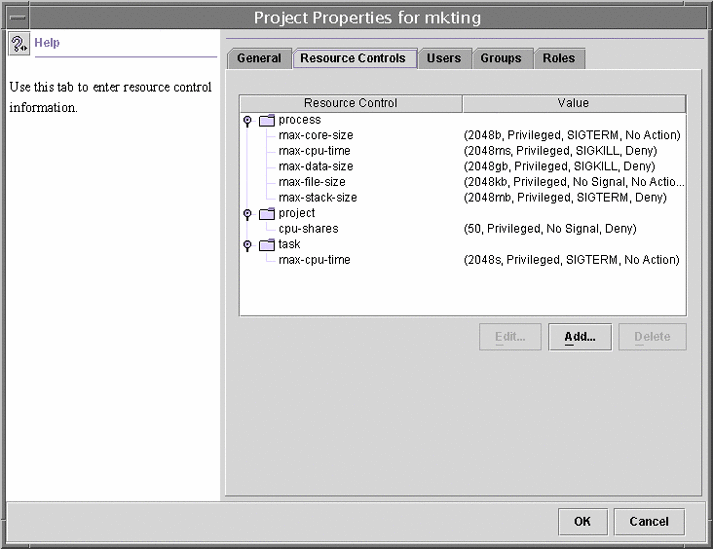

Previous
Previous
Resource Controls Tab
Resource controls allow you to associate a project with a set of resource constraints. These constraints determine the allowable resource usage of tasks and processes that run in the context of the project.
Figure 15-2 Resource Controls Tab in the Solaris Management Console How to Access the Resource Controls Tab
How to Access the Resource Controls Tab
The Resource Controls tab is located under System Configuration in the Navigation pane. To access Resource Controls, do the following:
- Click the System Configuration control entity in the Navigation pane.
- Double-click Projects.
- Click on a project in the console main window to select it.
- Select Properties from the Action menu.
- Click the Resource Controls tab.
View, add, edit, or delete resource control values for processes, projects, and tasks.
Resource Controls You Can Set
The following table shows the resource controls that can be set in the console. The table describes the resource that is constrained by each control. The table also identifies the default units that are used by the project database for that resource. The default units are of two types:
Quantities represent a limited amount.
Indexes represent a maximum valid identifier.
Thus, project.cpu-shares specifies the number of shares to which the project is entitled. process.max-file-descriptor specifies the highest file number that can be assigned to a process by the open(2) system call.
Table 15-1 Standard Resource Controls Available in the Solaris Management ConsoleControl Name | Description | Default Unit |
|---|---|---|
project.cpu-shares | The number of CPU shares that are granted to this project for use with the fair share scheduler (FSS) (see the FSS(7) man page) | Quantity (shares) |
task.max-cpu-time | Maximum CPU time that is available to this task's processes | Time (seconds) |
task.max-lwps | Maximum number of LWPs simultaneously available to this task's processes | Quantity (LWPs) |
process.max-cpu-time | Maximum CPU time that is available to this process | Time (seconds) |
process.max-file-descriptor | Maximum file descriptor index that is available to this process | Index (maximum file descriptor) |
process.max-file-size | Maximum file offset that is available for writing by this process | Size (bytes) |
process.max-core-size | Maximum size of a core file that is created by this process | Size (bytes) |
process.max-data-size | Maximum heap memory that is available to this process | Size (bytes) |
process.max-stack-size | Maximum stack memory segment that is available to this process | Size (bytes) |
process.max-address-space | Maximum amount of address space, as summed over segment sizes, available to this process | Size (bytes) |
Setting Values
You can view, add, edit, or delete resource control values for processes, projects, and tasks. These operations are performed through dialog boxes in the console.
Resource controls and values are viewed in tables in the console. The Resource Control column lists the resource controls that can be set. The Value column displays the properties that are associated with each resource control. In the table, these values are enclosed in parentheses, and they appear as plain text separated by commas. The values in parentheses comprise an “action clause.” Each action clause is composed of a threshold, a privilege level, one signal, and one local action that is associated with the particular threshold. Each resource control can have multiple action clauses, which are also separated by commas.
Note - On a running system, values that are altered in the project database through the console only take effect for new tasks that are started in a project.
Console References
For information on projects and tasks, see Chapter 2, Projects and Tasks (Overview). For information on resource controls, see Chapter 6, Resource Controls (Overview). For information on the fair share scheduler (FSS), see Chapter 8, Fair Share Scheduler (Overview).
Note - Not all resource controls can be set in the console. See Table 15-1 for the list of controls that can be set in the console.
Part IIZones
This part covers Solaris Zones software partitioning technology, which provides a means of virtualizing operating system services to create an isolated environment for running applications. This isolation prevents processes that are running in one zone from monitoring or affecting processes running in other zones.